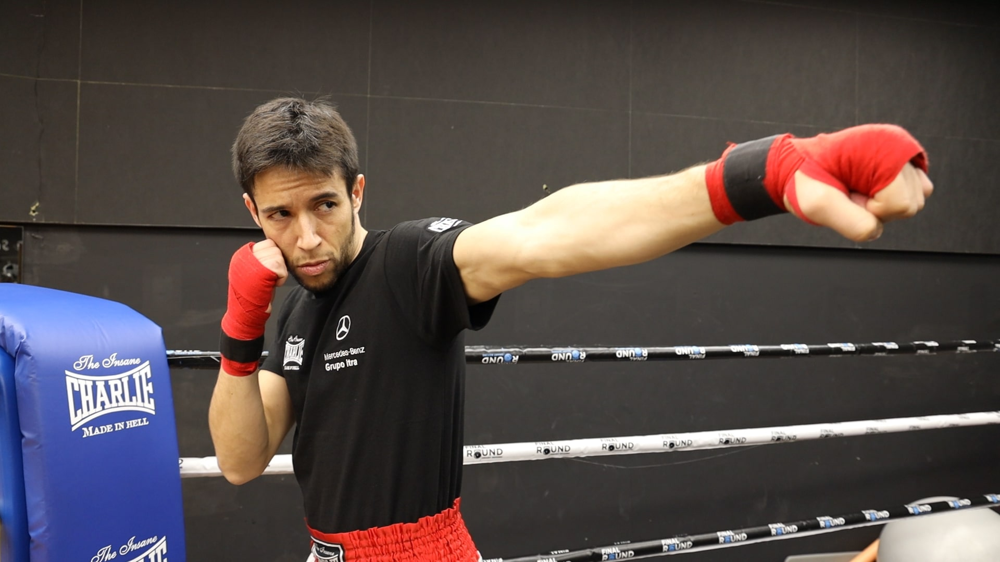

! Los 5 tipos de jab que tienes que dominar ¡
El jab es, ciertamente, el más simple y al mismo tiempo más importante golpe en el boxeo. El jab es un golpe único no por su potencia, sino por su velocidad la cual permite (además de preparar el combo 1 y 2) diagnosticar a tu oponente en el ring y poder conocer su estilo de lucha lo cual es vital en una pelea. Todo es nos indica que el jab es el golpe por excelencia que todo buen boxeador debería dominar en su totalidad, y hoy veras 6 tipos de jab para añadir a tu boxeo
1 - Jab clasico
Este es el mas simple de todos los tipos de jab, encierto modo se podria decir que es su padre. Para lanzar este golpe solo debes estar en tu guardia y tirar un golpe recto con el brazo mas cercano al oponente, si eres derecho este brazo sera el izquierso y si eres zurdo al reves. Esta toda la ciencia de un jab un golpe recto y rapido como se puede ver en la imagen de arriba.
2 - Jab de guardia shoulder roll
Parar lograr con exito este tiro ya tienes que conocer la guardia shoulder roll. Este jab se asemeja mas a un latigazo donde con nuestro brazo mas cercano al oponente lo tiraremos y guardaremos de nuevo el brazo de la manera mas rapida posible. Este es jab por excelencia de mayweather.
3 - Jab cabeceando a la derecha
Si quieres ser un buen boxeador esta mas que claro que tener buenos esquives es fundamental. Una de las reglas mas basicas que todo boxeador sabe es: siempre salir de la linea de ataque o linea roja, esta es la linea de mayor peligro ya que puedes recibir golpes directos de tu oponente. La idea de este jab es tirar un jab recto clasico y al mismo tiempo sacar la cabeza de la linea de ataque con el fin de: 1 estar en una zona mas segura y 2 generar mas fuerza con el golpe.
4 - Jab hibrido
Su nombre causado de que este jab sea un hibrido entre un jab con cabeceo y un upper. La forma para tirar este golpe es como en jab concabeceo. Primero vamos a hacer un cabeceo a la izquierda y segundo desde alli tiramos el jab, pero con la palma hacia arriba (de alliel hibrido).
5 - Jab al cuerpo
Es el segundo mas sencillo que hay. La forma para conectarlo es bajando el cuerpo con las piernas y de ahi tirar el jab al cuerpo. Una recomendacion que doy es que antes de tirarlo primero se cree un marco para despues bajar el cuerpo y lograr conectar el golpe.